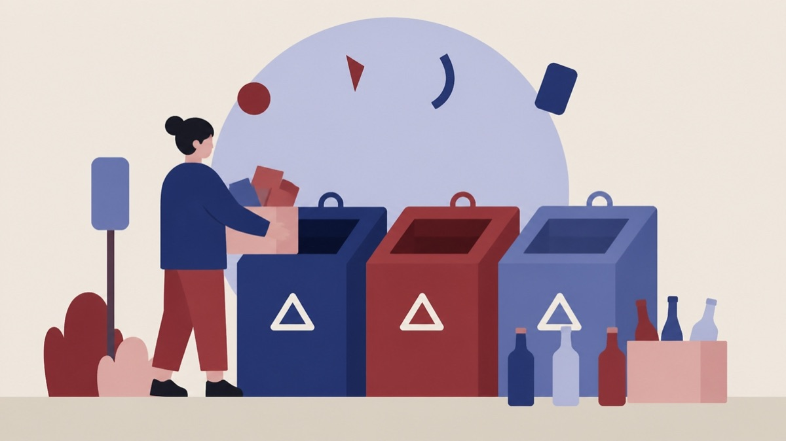

På dagsordenen 9. november, Økonomi- & Erhvervsudvalget, Guldborgsund
Godkendelse af varmeplan 2025

Kort fortalt
- Forslaget
- Godkende Varmeplan 2025 endeligt, herunder de beskrevne scenarier for alternativer til
- Hvem
- Økonomi- & Erhvervsudvalget, Guldborgsund Kommune
- Hvornår
- Mandag 9. november 2026
- Status
- På dagsordenen. Sagen behandles på mødet.
Er noget forkert her? Skriv til os
Hvad kan du gøre?
- Skriv til politikerne
- Udvalgets møder er lukkede, men du kan skrive til medlemmerne før mødet mandag 9. november 2026. Du finder dem på guldborgsund.dk.
Læs hele sagen Kommunens egen tekst
Indstilling
Direktionen indstiller til Teknik-, Natur- & Miljøudvalget, at anbefale Økonomi- & Erhvervsudvalget og
Byrådet:
1. at godkende Varmeplan 2025 endeligt, herunder de beskrevne scenarier for alternativer til
affaldsforbrænding.
Sagsfremstilling
Guldborgsund Kommunes varmeplan er blevet opdateret, så den afspejler udviklingen i varmeforsyningen
og de udfordringer, der forventes de kommende år. Forslaget til den nye varmeplan er godkendt af
Byrådet 11. december 2025 og har efterfølgende været i offentlig høring i 8 uger. Varmeplanen
fremlægges nu til endelig politisk godkendelse.
Planen er udarbejdet i dialog med kommunens fjernvarmeselskaber og beskriver de overordnede rammer
og potentialer for udviklingen af varmeforsyningen de kommende år (se bilag).
Varmeplanen er en strategisk rammeplan og er ikke juridisk bindende. Det betyder, at planen beskriver
mulige udviklingsretninger for varmeforsyningen, men ikke træffer beslutning om konkrete projekter eller
anlæg. Formålet er at skabe et fælles grundlag for dialog mellem kommunen, varmeforsyningerne og
andre aktører om den fremtidige udvikling. Planen belyser forskellige muligheder og alternativer til den
nuværende varmeforsyning, herunder alternativer til affaldsforbrænding.
Varmeplanen er ikke et statsligt krav, men et planlægningsværktøj, som kommunen har valgt at
udarbejde. Hvis et forsyningsselskab senere ønsker at gennemføre et konkret projekt, skal det fortsat
behandles efter gældende lovgivning. Varmeplanens rammer kan indgå i vurderingen, men planen giver
ikke i sig selv adgang til at etablere de beskrevne løsninger.
Fakta om nuværende varmeforsyning
Mere end halvdelen af kommunens boliger forsynes i dag med fjernvarme. Da fjernvarmenettet allerede er
veludbygget, vurderes potentialet for yderligere udbygning at være begrænset. Der kan dog fortsat være
muligheder i forbindelse med nye boligområder og byggemodninger tæt på eksisterende
forsyningsområder.
Flere fjernvarmeselskaber arbejder samtidig med at omstille varmeproduktionen fra biomasse til mere
klimavenlige energikilder som solvarme, elkedler og varmepumper.
En væsentlig del af fjernvarmen i Nykøbing F og omegn produceres i dag ved REFA's
affaldsforbrændingsanlæg. Anlægget nedlægges som følge af affaldslovgivningens krav om organisering i
selskaber, hvilket medfører at det økonomisk ikke vil være rentabelt at fortsætte driften i fremtiden. Derfor
skal der findes andre anlæg eller kombinationer heraf til varmeproduktion. Forventningen er, at
affaldsforbrændingsanlægget er afviklet om cirka 10 år.
Scenarier for fremtidig varmeforsyning
Varmeplanen beskriver forskellige scenarier for en fremtidig varmeforsyning uden affaldsforbrænding.
Mulige alternativer og kombinationer omfatter:
• øget udnyttelse af overskudsvarme fra Nordic Sugar
• øget anvendelse af elkedler
• etablering af store centrale varmepumper
• anvendelse af lokal biomasse
• anvendelse af overskudsvarme fra datacentre.
Realisering af disse løsninger vil kræve betydelige investeringer hos de berørte forsyningsselskaber.
Området er forbrugerfinansieret. Overslagsberegninger viser dog, at forbrugernes økonomi ikke forventes
at blive væsentligt forhøjet.
Høringssvar
Varmeplanen har været i høring i 8 uger. Der er modtaget høringssvar fra:
• Lolland Forsyning A/S, som ønsker et tættere samarbejde om strategisk energiplanlægning og
arbejdet med klimaplan DK2020
• Sydfalster Varmeværk a.m.b.a., som peger på, at et muligt feriecenter i Marielyst kan skabe
grundlag for udbygning af fjernvarmeforsyningen
• Specialaffaldsforbrændingsanlægget, SWS, der forsynede Nørre Alslev med overskudsvarme, vil ikke
blive genetableret, da Energistyrelsen har afgjort, at affaldsforbrændingsgrundlaget i Danmark
allerede er dækkende. Halmvarmeværket kører derfor nu igen i fuld drift. Nørre Alslev Varmeværk
a.m.b.a. oplyser, at værket derfor overvejer andre udviklingsmuligheder, når halmværket en gang
skal udskiftes.
• Nordic Sugar Nykøbing F., som oplyser, at sukkerfabrikken kan levere mere overskudsvarme
• Sakskøbing Fjernvarmeselskab a.m.b.a., som oplyser, at selskabet i 2026 er fusioneret med Maribo
Varmeværk a.m.b.a. under navnet Sydhavsvarme a.m.b.a.
• Guldborgsund Varme A/S, som peger på mulighederne for at udnytte overskudsvarme fra et
eventuelt kommende datacenter og oplyser, at selskabet forventer at omlægge to biooliefyrede
spids- og reservelastcentraler.
Relevante bemærkninger fra høringssvarene samt mindre præciseringer og opdateringer er indarbejdet i
planen.
Sammenhæng til politiske strategier
Sagen understøtter perspektivet Bæredygtighedog pejlemærket Gode rammer for at bo og udvikle sig.
Varmeplanen bidrager til den grønne omstilling og skaber et strategisk grundlag for en fremtidssikret
varmeforsyning i kommunen.
Økonomi
Sagen har ingen bevillingsmæssige konsekvenser.
HØRING
Varmeplan 2025 har været i offentlig høring i otte uger samt i særskilt høring hos relevante
varmeinteressenter. Høringssvarene er samlet i vedlagte hvidbog.
Behandling i Teknik-, Natur- & Miljøudvalget 26. oktober 2026
Fraværende: René Christensen (M) - Fravær med afbud
Godkendt.
UDVALGTE
Bilag
- Offentlig
- Varmeplan 2025 TNMU
- Offentlig
- Hvidbog - varmeplan
Kilde: Guldborgsund Kommune, Økonomi- & Erhvervsudvalget, dagsorden fra mødet mandag 9. november 2026, punkt 9. Læs den originale sag hos kommunen.